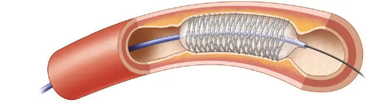

نسخه استخراجشده؛ ترجمه یا تأیید علمی انجام نشده است. وضعیت: captured
آقای ۶۳ سالهای سه هفته پیش سکتهی قلبی کرده و حالا برای روکش دو دندان خلفی آمده. میگوید: «حالم خوب است، فقط زود خسته میشوم.» درمان را شروع میکنی؟
خطر هر بیمار قلبی را با سه پرسش بسنج: بیماری چقدر شدید است؟ بیمار چقدر پایدار است و چه ذخیرهی قلبی دارد؟ کار دندانپزشکی چقدر بزرگ است؟
اگر بیمار پرخطر درمان فوری لازم داشت، فقط کار ضروری کن: رفع درد، کنترل عفونت یا کنترل خونریزی. این کار پس از مشاوره با پزشک و ترجیحاً در کلینیک بیمارستانی با پایش مداوم انجام شود. در این بیمار تا جای ممکن بیحسی بدون تنگکنندهی عروق بزن (اگر لازم شد، حداکثر دو کارپول ۱:۱۰۰۰۰۰)، اکسیژن مداوم با کانولای بینی بده و نیتروگلیسرین پیشگیرانه را درست پیش از شروع در نظر بگیر.
اندازهی کار هم مهم است: معاینه و ترمیم ساده کمخطرتریناند، جراحی کوچک دهان خطر زیر ۱٪ دارد و جراحیهای وسیع فک و صورت خطر ۱ تا ۵٪.
بسیاری از بیماران قلبی آنژیوپلاستی با استنت یا جراحی بایپس کرونر (CABG) داشتهاند. استنت دو نوع است: فلزی ساده (bare metal) و دارویی (drug-eluting). استنت دارویی تا حدود یک سال خطر لخته شدن دارد؛ برای همین بیمار مدتی طولانی دو داروی ضدپلاکت میخورد، مثلاً آسپرین و کلوپیدوگرل.

بیماری که وارفارین میخورد، اگر INR او ۳٫۵ یا کمتر باشد، جراحی دهان را تحمل میکند؛ INR را ۲۴ تا ۷۲ ساعت پیش از کار بگیر.
پیگیری: ۲۴ تا ۴۸ ساعت پس از هر کار تهاجمی با بیمار تماس بگیر و بپرس دورهی پس از عمل بیمشکل گذشته یا نه.